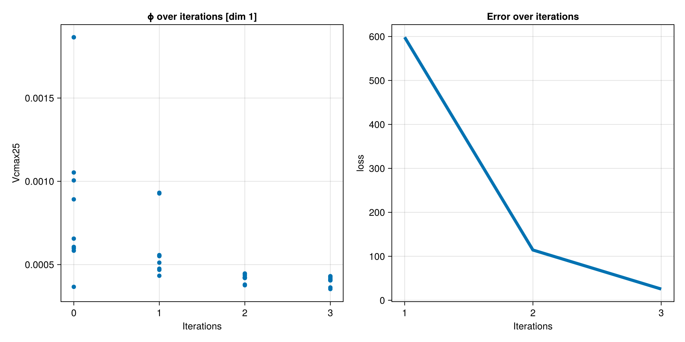
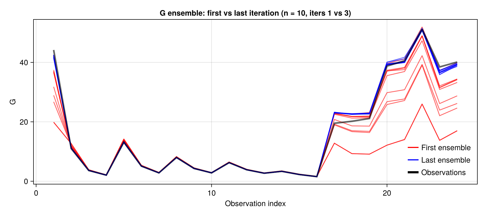

Perfect Model Site-Level Calibration Tutorial
This tutorial demonstrates how to perform a perfect model calibration experiment using ClimaLand. In a perfect model experiment, we generate synthetic observations from our model with known parameters, then use ensemble Kalman inversion to recover those parameters. This approach allows us to evaluate the calibration method without the influence of model structural errors.
In this tutorial we will calibrate the Vcmax25 parameter using latent heat flux observations from the FLUXNET site (US-MOz).
Overview
The tutorial covers:
- Setting up a land surface model for a FLUXNET site (US-MOz)
- Creating a synthetic observation dataset
- Implementing Ensemble Kalman Inversion
- Analyzing the calibration results
Setup and Imports
Load all the necessary packages for land surface modeling, diagnostics, plotting, and ensemble methods:
using ClimaLand
using ClimaLand.Domains: Column
using ClimaLand.Canopy
using ClimaLand.Simulations
import ClimaLand.FluxnetSimulations as FluxnetSimulations
import ClimaLand.Parameters as LP
import ClimaLand.LandSimVis as LandSimVis
import ClimaDiagnostics
import EnsembleKalmanProcesses as EKP
import EnsembleKalmanProcesses.ParameterDistributions as PD
using CairoMakie
CairoMakie.activate!()
using Statistics
using Logging
import Random
using Dates
using ClimaAnalysis, GeoMakie, Printf, StatsBaseConfiguration and Site Setup
Configure the experiment parameters and set up the FLUXNET site (US-MOz) with its specific location, time settings, and atmospheric conditions.
Set random seed for reproducibility and floating point precision
rng_seed = 1234
rng = Random.MersenneTwister(rng_seed)
const FT = Float32Float32Initialize land parameters and site configuration.
earth_param_set = LP.LandParameters(FT)
default_params_filepath =
joinpath(pkgdir(ClimaLand), "toml", "default_parameters.toml")
toml_dict = LP.create_toml_dict(FT, default_params_filepath)
site_ID = "US-MOz"
site_ID_val = FluxnetSimulations.replace_hyphen(site_ID):US_MOzGet site-specific information: location coordinates, time offset, and sensor height.
(; time_offset, lat, long) =
FluxnetSimulations.get_location(FT, Val(site_ID_val))
(; atmos_h) = FluxnetSimulations.get_fluxtower_height(FT, Val(site_ID_val))(atmos_h = 32.0f0,)Get maximum simulation start and end dates
(start_date, stop_date) =
FluxnetSimulations.get_data_dates(site_ID, time_offset)
stop_date = DateTime(2010, 4, 1, 6, 30) # Set the stop date manually
Δt = 450.0 # seconds450.0Domain and Forcing Setup
Create the computational domain and load the necessary forcing data for the land surface model.
Create a column domain representing a 2-meter deep soil column with 10 vertical layers.
zmin = FT(-2) # 2m depth
zmax = FT(0) # surface
domain = Column(; zlim = (zmin, zmax), nelements = 10, longlat = (long, lat));Load prescribed atmospheric and radiative forcing from FLUXNET data
forcing = FluxnetSimulations.prescribed_forcing_fluxnet(
site_ID,
lat,
long,
time_offset,
atmos_h,
start_date,
earth_param_set,
FT,
);Get Leaf Area Index (LAI) data from MODIS satellite observations.
LAI = ClimaLand.Canopy.prescribed_lai_modis(
domain.space.surface,
start_date,
stop_date,
);Model Setup
Create an integrated land model that couples canopy, snow, soil, and soil CO2 components. This comprehensive model allows us to simulate the full land surface system and its interactions.
function model(Vcmax25)
Vcmax25 = FT(Vcmax25)
#md # Set up ground conditions and define which components to simulate prognostically
ground = ClimaLand.PrognosticGroundConditions{FT}()
prognostic_land_components = (:canopy, :snow, :soil, :soilco2)
#md # Prepare canopy domain and forcing
canopy_domain = ClimaLand.Domains.obtain_surface_domain(domain)
canopy_forcing = (; forcing.atmos, forcing.radiation, ground)
#md # Set up photosynthesis parameters using the Farquhar model
photosyn_defaults =
Canopy.clm_photosynthesis_parameters(canopy_domain.space.surface)
photosynthesis = Canopy.FarquharModel{FT}(
canopy_domain;
photosynthesis_parameters = (;
is_c3 = photosyn_defaults.is_c3,
Vcmax25,
),
)
conductance = Canopy.MedlynConductanceModel{FT}(canopy_domain; g1 = FT(141))
#md # Create canopy model
canopy = ClimaLand.Canopy.CanopyModel{FT}(
canopy_domain,
canopy_forcing,
LAI,
toml_dict;
photosynthesis,
prognostic_land_components,
conductance,
)
#md # Create integrated land model
land_model = LandModel{FT}(forcing, LAI, toml_dict, domain, Δt; canopy)
#md # Set initial conditions from FLUXNET data
set_ic! = FluxnetSimulations.make_set_fluxnet_initial_conditions(
site_ID,
start_date,
time_offset,
land_model,
)
#md # Configure diagnostics to output sensible and latent heat fluxes hourly
output_vars = ["shf", "lhf"]
diagnostics = ClimaLand.default_diagnostics(
land_model,
start_date;
output_writer = ClimaDiagnostics.Writers.DictWriter(),
output_vars,
reduction_period = :hourly,
)
#md # Create and run the simulation
simulation = Simulations.LandSimulation(
start_date,
stop_date,
Δt,
land_model;
set_ic!,
user_callbacks = (),
diagnostics,
)
solve!(simulation)
return simulation
endmodel (generic function with 1 method)Observation and Helper Functions
Define the observation function G that maps from parameter space to observation space, along with supporting functions for data processing:
This function runs the model and computes diurnal average of latent heat flux
function G(Vcmax25)
simulation = model(Vcmax25)
lhf = get_lhf(simulation)
observation =
Float64.(
get_diurnal_average(
lhf,
simulation.start_date,
simulation.start_date + Day(20),
),
)
return observation
endG (generic function with 1 method)Helper function: Extract latent heat flux from simulation diagnostics
function get_lhf(simulation)
return ClimaLand.Diagnostics.diagnostic_as_vectors(
simulation.diagnostics[1].output_writer,
"lhf_1h_average",
)
endget_lhf (generic function with 1 method)Helper function: Compute diurnal average of a variable
function get_diurnal_average(var, start_date, spinup_date)
(times, data) = var
model_dates = if times isa Vector{DateTime}
times
else
Second.(getproperty.(times, :counter)) .+ start_date
end
spinup_idx = findfirst(spinup_date .<= model_dates)
model_dates = model_dates[spinup_idx:end]
data = data[spinup_idx:end]
hour_of_day = Hour.(model_dates)
mean_by_hour = [mean(data[hour_of_day .== Hour(i)]) for i in 0:23]
return mean_by_hour
endget_diurnal_average (generic function with 1 method)Perfect Model Experiment Setup
Since this is a perfect model experiment, we generate synthetic observations from our target parameter value. This parameter will be recovered by the calibration.
true_Vcmax25 = 0.0001 # [mol m-2 s-1]
observations = G(true_Vcmax25)24-element Vector{Float64}:
44.178836822509766
11.001588821411133
3.623067617416382
2.064614772796631
13.133753776550293
5.098321914672852
2.816481113433838
7.990640640258789
4.325130939483643
2.8118200302124023
6.261807441711426
3.8729465007781982
2.702024459838867
3.3433947563171387
2.268411636352539
1.5571140050888062
19.510915756225586
20.189542770385742
21.124704360961914
38.75772476196289
40.57959747314453
51.17400360107422
38.47483825683594
40.12964630126953Define observation noise covariance for the ensemble Kalman process. A flat covariance matrix is used here for simplicity.
noise_covariance = 0.05 * EKP.ILinearAlgebra.UniformScaling{Float64}
0.05*IPrior Distribution and Calibration Configuration
Set up the prior distribution for the parameter and configure the ensemble Kalman inversion:
Constrained Gaussian prior for Vcmax25 with bounds [0, 2e-3]
prior = PD.constrained_gaussian("Vcmax25", 1e-3, 5e-4, 0, 2e-3)ParameterDistribution with 1 entries:
'Vcmax25' with EnsembleKalmanProcesses.ParameterDistributions.Constraint{EnsembleKalmanProcesses.ParameterDistributions.Bounded}[Bounds: (0, 0.002)] over distribution EnsembleKalmanProcesses.ParameterDistributions.Parameterized(Distributions.Normal{Float64}(μ=0.0, σ=1.0253151205244289))
Set the ensemble size and number of iterations
ensemble_size = 10
N_iterations = 33Ensemble Kalman Inversion
Initialize and run the ensemble Kalman process:
Sample the initial parameter ensemble from the prior distribution
initial_ensemble = EKP.construct_initial_ensemble(rng, prior, ensemble_size)
ensemble_kalman_process = EKP.EnsembleKalmanProcess(
initial_ensemble,
observations,
noise_covariance,
EKP.Inversion();
scheduler = EKP.DataMisfitController(
terminate_at = Inf,
on_terminate = "continue",
),
rng,
)EnsembleKalmanProcesses.EnsembleKalmanProcess{Float64, Int64, EnsembleKalmanProcesses.Inversion{Float64, Nothing, Nothing}, EnsembleKalmanProcesses.DataMisfitController{Float64, String}, EnsembleKalmanProcesses.NesterovAccelerator{Float64}, Vector{EnsembleKalmanProcesses.UpdateGroup}, Nothing}(EnsembleKalmanProcesses.DataContainers.DataContainer{Float64}[EnsembleKalmanProcesses.DataContainers.DataContainer{Float64}([-0.8325050664413828 2.6271025325751536 0.10590647419812717 -0.21741942508155152 2.620949938138978 0.01075406465127927 -0.7174310248175343 -0.8539057666932345 -1.4948703507073922 -0.8871392387754122])], EnsembleKalmanProcesses.ObservationSeries{Vector{EnsembleKalmanProcesses.Observation{Vector{Vector{Float64}}, Vector{LinearAlgebra.Diagonal{Float64, Vector{Float64}}}, Vector{LinearAlgebra.Diagonal{Float64, Vector{Float64}}}, Vector{String}, Vector{UnitRange{Int64}}, Nothing}}, EnsembleKalmanProcesses.FixedMinibatcher{Vector{Vector{Int64}}, String, Random.TaskLocalRNG}, Vector{String}, Vector{Vector{Vector{Int64}}}, Nothing}(EnsembleKalmanProcesses.Observation{Vector{Vector{Float64}}, Vector{LinearAlgebra.Diagonal{Float64, Vector{Float64}}}, Vector{LinearAlgebra.Diagonal{Float64, Vector{Float64}}}, Vector{String}, Vector{UnitRange{Int64}}, Nothing}[EnsembleKalmanProcesses.Observation{Vector{Vector{Float64}}, Vector{LinearAlgebra.Diagonal{Float64, Vector{Float64}}}, Vector{LinearAlgebra.Diagonal{Float64, Vector{Float64}}}, Vector{String}, Vector{UnitRange{Int64}}, Nothing}([[44.178836822509766, 11.001588821411133, 3.623067617416382, 2.064614772796631, 13.133753776550293, 5.098321914672852, 2.816481113433838, 7.990640640258789, 4.325130939483643, 2.8118200302124023, 6.261807441711426, 3.8729465007781982, 2.702024459838867, 3.3433947563171387, 2.268411636352539, 1.5571140050888062, 19.510915756225586, 20.189542770385742, 21.124704360961914, 38.75772476196289, 40.57959747314453, 51.17400360107422, 38.47483825683594, 40.12964630126953]], LinearAlgebra.Diagonal{Float64, Vector{Float64}}[[0.05 0.0 0.0 0.0 0.0 0.0 0.0 0.0 0.0 0.0 0.0 0.0 0.0 0.0 0.0 0.0 0.0 0.0 0.0 0.0 0.0 0.0 0.0 0.0; 0.0 0.05 0.0 0.0 0.0 0.0 0.0 0.0 0.0 0.0 0.0 0.0 0.0 0.0 0.0 0.0 0.0 0.0 0.0 0.0 0.0 0.0 0.0 0.0; 0.0 0.0 0.05 0.0 0.0 0.0 0.0 0.0 0.0 0.0 0.0 0.0 0.0 0.0 0.0 0.0 0.0 0.0 0.0 0.0 0.0 0.0 0.0 0.0; 0.0 0.0 0.0 0.05 0.0 0.0 0.0 0.0 0.0 0.0 0.0 0.0 0.0 0.0 0.0 0.0 0.0 0.0 0.0 0.0 0.0 0.0 0.0 0.0; 0.0 0.0 0.0 0.0 0.05 0.0 0.0 0.0 0.0 0.0 0.0 0.0 0.0 0.0 0.0 0.0 0.0 0.0 0.0 0.0 0.0 0.0 0.0 0.0; 0.0 0.0 0.0 0.0 0.0 0.05 0.0 0.0 0.0 0.0 0.0 0.0 0.0 0.0 0.0 0.0 0.0 0.0 0.0 0.0 0.0 0.0 0.0 0.0; 0.0 0.0 0.0 0.0 0.0 0.0 0.05 0.0 0.0 0.0 0.0 0.0 0.0 0.0 0.0 0.0 0.0 0.0 0.0 0.0 0.0 0.0 0.0 0.0; 0.0 0.0 0.0 0.0 0.0 0.0 0.0 0.05 0.0 0.0 0.0 0.0 0.0 0.0 0.0 0.0 0.0 0.0 0.0 0.0 0.0 0.0 0.0 0.0; 0.0 0.0 0.0 0.0 0.0 0.0 0.0 0.0 0.05 0.0 0.0 0.0 0.0 0.0 0.0 0.0 0.0 0.0 0.0 0.0 0.0 0.0 0.0 0.0; 0.0 0.0 0.0 0.0 0.0 0.0 0.0 0.0 0.0 0.05 0.0 0.0 0.0 0.0 0.0 0.0 0.0 0.0 0.0 0.0 0.0 0.0 0.0 0.0; 0.0 0.0 0.0 0.0 0.0 0.0 0.0 0.0 0.0 0.0 0.05 0.0 0.0 0.0 0.0 0.0 0.0 0.0 0.0 0.0 0.0 0.0 0.0 0.0; 0.0 0.0 0.0 0.0 0.0 0.0 0.0 0.0 0.0 0.0 0.0 0.05 0.0 0.0 0.0 0.0 0.0 0.0 0.0 0.0 0.0 0.0 0.0 0.0; 0.0 0.0 0.0 0.0 0.0 0.0 0.0 0.0 0.0 0.0 0.0 0.0 0.05 0.0 0.0 0.0 0.0 0.0 0.0 0.0 0.0 0.0 0.0 0.0; 0.0 0.0 0.0 0.0 0.0 0.0 0.0 0.0 0.0 0.0 0.0 0.0 0.0 0.05 0.0 0.0 0.0 0.0 0.0 0.0 0.0 0.0 0.0 0.0; 0.0 0.0 0.0 0.0 0.0 0.0 0.0 0.0 0.0 0.0 0.0 0.0 0.0 0.0 0.05 0.0 0.0 0.0 0.0 0.0 0.0 0.0 0.0 0.0; 0.0 0.0 0.0 0.0 0.0 0.0 0.0 0.0 0.0 0.0 0.0 0.0 0.0 0.0 0.0 0.05 0.0 0.0 0.0 0.0 0.0 0.0 0.0 0.0; 0.0 0.0 0.0 0.0 0.0 0.0 0.0 0.0 0.0 0.0 0.0 0.0 0.0 0.0 0.0 0.0 0.05 0.0 0.0 0.0 0.0 0.0 0.0 0.0; 0.0 0.0 0.0 0.0 0.0 0.0 0.0 0.0 0.0 0.0 0.0 0.0 0.0 0.0 0.0 0.0 0.0 0.05 0.0 0.0 0.0 0.0 0.0 0.0; 0.0 0.0 0.0 0.0 0.0 0.0 0.0 0.0 0.0 0.0 0.0 0.0 0.0 0.0 0.0 0.0 0.0 0.0 0.05 0.0 0.0 0.0 0.0 0.0; 0.0 0.0 0.0 0.0 0.0 0.0 0.0 0.0 0.0 0.0 0.0 0.0 0.0 0.0 0.0 0.0 0.0 0.0 0.0 0.05 0.0 0.0 0.0 0.0; 0.0 0.0 0.0 0.0 0.0 0.0 0.0 0.0 0.0 0.0 0.0 0.0 0.0 0.0 0.0 0.0 0.0 0.0 0.0 0.0 0.05 0.0 0.0 0.0; 0.0 0.0 0.0 0.0 0.0 0.0 0.0 0.0 0.0 0.0 0.0 0.0 0.0 0.0 0.0 0.0 0.0 0.0 0.0 0.0 0.0 0.05 0.0 0.0; 0.0 0.0 0.0 0.0 0.0 0.0 0.0 0.0 0.0 0.0 0.0 0.0 0.0 0.0 0.0 0.0 0.0 0.0 0.0 0.0 0.0 0.0 0.05 0.0; 0.0 0.0 0.0 0.0 0.0 0.0 0.0 0.0 0.0 0.0 0.0 0.0 0.0 0.0 0.0 0.0 0.0 0.0 0.0 0.0 0.0 0.0 0.0 0.05]], LinearAlgebra.Diagonal{Float64, Vector{Float64}}[[20.0 0.0 0.0 0.0 0.0 0.0 0.0 0.0 0.0 0.0 0.0 0.0 0.0 0.0 0.0 0.0 0.0 0.0 0.0 0.0 0.0 0.0 0.0 0.0; 0.0 20.0 0.0 0.0 0.0 0.0 0.0 0.0 0.0 0.0 0.0 0.0 0.0 0.0 0.0 0.0 0.0 0.0 0.0 0.0 0.0 0.0 0.0 0.0; 0.0 0.0 20.0 0.0 0.0 0.0 0.0 0.0 0.0 0.0 0.0 0.0 0.0 0.0 0.0 0.0 0.0 0.0 0.0 0.0 0.0 0.0 0.0 0.0; 0.0 0.0 0.0 20.0 0.0 0.0 0.0 0.0 0.0 0.0 0.0 0.0 0.0 0.0 0.0 0.0 0.0 0.0 0.0 0.0 0.0 0.0 0.0 0.0; 0.0 0.0 0.0 0.0 20.0 0.0 0.0 0.0 0.0 0.0 0.0 0.0 0.0 0.0 0.0 0.0 0.0 0.0 0.0 0.0 0.0 0.0 0.0 0.0; 0.0 0.0 0.0 0.0 0.0 20.0 0.0 0.0 0.0 0.0 0.0 0.0 0.0 0.0 0.0 0.0 0.0 0.0 0.0 0.0 0.0 0.0 0.0 0.0; 0.0 0.0 0.0 0.0 0.0 0.0 20.0 0.0 0.0 0.0 0.0 0.0 0.0 0.0 0.0 0.0 0.0 0.0 0.0 0.0 0.0 0.0 0.0 0.0; 0.0 0.0 0.0 0.0 0.0 0.0 0.0 20.0 0.0 0.0 0.0 0.0 0.0 0.0 0.0 0.0 0.0 0.0 0.0 0.0 0.0 0.0 0.0 0.0; 0.0 0.0 0.0 0.0 0.0 0.0 0.0 0.0 20.0 0.0 0.0 0.0 0.0 0.0 0.0 0.0 0.0 0.0 0.0 0.0 0.0 0.0 0.0 0.0; 0.0 0.0 0.0 0.0 0.0 0.0 0.0 0.0 0.0 20.0 0.0 0.0 0.0 0.0 0.0 0.0 0.0 0.0 0.0 0.0 0.0 0.0 0.0 0.0; 0.0 0.0 0.0 0.0 0.0 0.0 0.0 0.0 0.0 0.0 20.0 0.0 0.0 0.0 0.0 0.0 0.0 0.0 0.0 0.0 0.0 0.0 0.0 0.0; 0.0 0.0 0.0 0.0 0.0 0.0 0.0 0.0 0.0 0.0 0.0 20.0 0.0 0.0 0.0 0.0 0.0 0.0 0.0 0.0 0.0 0.0 0.0 0.0; 0.0 0.0 0.0 0.0 0.0 0.0 0.0 0.0 0.0 0.0 0.0 0.0 20.0 0.0 0.0 0.0 0.0 0.0 0.0 0.0 0.0 0.0 0.0 0.0; 0.0 0.0 0.0 0.0 0.0 0.0 0.0 0.0 0.0 0.0 0.0 0.0 0.0 20.0 0.0 0.0 0.0 0.0 0.0 0.0 0.0 0.0 0.0 0.0; 0.0 0.0 0.0 0.0 0.0 0.0 0.0 0.0 0.0 0.0 0.0 0.0 0.0 0.0 20.0 0.0 0.0 0.0 0.0 0.0 0.0 0.0 0.0 0.0; 0.0 0.0 0.0 0.0 0.0 0.0 0.0 0.0 0.0 0.0 0.0 0.0 0.0 0.0 0.0 20.0 0.0 0.0 0.0 0.0 0.0 0.0 0.0 0.0; 0.0 0.0 0.0 0.0 0.0 0.0 0.0 0.0 0.0 0.0 0.0 0.0 0.0 0.0 0.0 0.0 20.0 0.0 0.0 0.0 0.0 0.0 0.0 0.0; 0.0 0.0 0.0 0.0 0.0 0.0 0.0 0.0 0.0 0.0 0.0 0.0 0.0 0.0 0.0 0.0 0.0 20.0 0.0 0.0 0.0 0.0 0.0 0.0; 0.0 0.0 0.0 0.0 0.0 0.0 0.0 0.0 0.0 0.0 0.0 0.0 0.0 0.0 0.0 0.0 0.0 0.0 20.0 0.0 0.0 0.0 0.0 0.0; 0.0 0.0 0.0 0.0 0.0 0.0 0.0 0.0 0.0 0.0 0.0 0.0 0.0 0.0 0.0 0.0 0.0 0.0 0.0 20.0 0.0 0.0 0.0 0.0; 0.0 0.0 0.0 0.0 0.0 0.0 0.0 0.0 0.0 0.0 0.0 0.0 0.0 0.0 0.0 0.0 0.0 0.0 0.0 0.0 20.0 0.0 0.0 0.0; 0.0 0.0 0.0 0.0 0.0 0.0 0.0 0.0 0.0 0.0 0.0 0.0 0.0 0.0 0.0 0.0 0.0 0.0 0.0 0.0 0.0 20.0 0.0 0.0; 0.0 0.0 0.0 0.0 0.0 0.0 0.0 0.0 0.0 0.0 0.0 0.0 0.0 0.0 0.0 0.0 0.0 0.0 0.0 0.0 0.0 0.0 20.0 0.0; 0.0 0.0 0.0 0.0 0.0 0.0 0.0 0.0 0.0 0.0 0.0 0.0 0.0 0.0 0.0 0.0 0.0 0.0 0.0 0.0 0.0 0.0 0.0 20.0]], ["observation"], UnitRange{Int64}[1:24], nothing)], EnsembleKalmanProcesses.FixedMinibatcher{Vector{Vector{Int64}}, String, Random.TaskLocalRNG}([[1]], "order", Random.TaskLocalRNG()), ["series_1"], Dict("minibatch" => 1, "epoch" => 1), [[[1]]], nothing), 10, EnsembleKalmanProcesses.DataContainers.DataContainer{Float64}[], Dict{String, Vector{Float64}}(), EnsembleKalmanProcesses.DataMisfitController{Float64, String}(Int64[], Inf, "continue"), EnsembleKalmanProcesses.NesterovAccelerator{Float64}([-0.8325050664413828 2.6271025325751536 0.10590647419812717 -0.21741942508155152 2.620949938138978 0.01075406465127927 -0.7174310248175343 -0.8539057666932345 -1.4948703507073922 -0.8871392387754122], 1.0), Float64[], EnsembleKalmanProcesses.UpdateGroup[EnsembleKalmanProcesses.UpdateGroup([1], [1, 2, 3, 4, 5, 6, 7, 8, 9, 10, 11, 12, 13, 14, 15, 16, 17, 18, 19, 20, 21, 22, 23, 24], Dict("[1,...,1]" => "[1,...,24]"))], EnsembleKalmanProcesses.Inversion{Float64, Nothing, Nothing}(nothing, nothing, false, 0.0), Random.MersenneTwister(1234, (0, 1002, 0, 11)), EnsembleKalmanProcesses.FailureHandler{EnsembleKalmanProcesses.Inversion, EnsembleKalmanProcesses.SampleSuccGauss}(EnsembleKalmanProcesses.var"#failsafe_update#169"()), EnsembleKalmanProcesses.Localizers.Localizer{EnsembleKalmanProcesses.Localizers.SECNice, Float64}(EnsembleKalmanProcesses.Localizers.var"#13#14"{EnsembleKalmanProcesses.Localizers.SECNice{Float64}}(EnsembleKalmanProcesses.Localizers.SECNice{Float64}(1000, 1.0, 1.0))), 0.1, nothing, false)Run the ensemble of forward models to iteratively update the parameter ensemble
Logging.with_logger(SimpleLogger(devnull, Logging.Error)) do
for i in 1:N_iterations
println("Iteration $i")
params_i = EKP.get_ϕ_final(prior, ensemble_kalman_process)
G_ens = hcat([G(params_i[:, j]...) for j in 1:ensemble_size]...)
EKP.update_ensemble!(ensemble_kalman_process, G_ens)
end
endIteration 1
Iteration 2
Iteration 3
Results Analysis and Visualization
Get the mean of the final parameter ensemble:
EKP.get_ϕ_mean_final(prior, ensemble_kalman_process)1-element Vector{Float64}:
0.00040417789914338857Now, let's analyze the calibration results by examining parameter evolution and comparing model outputs across iterations.
Plot the parameter ensemble evolution over iterations to visualize convergence:
dim_size = sum(length.(EKP.batch(prior)))
fig = CairoMakie.Figure(size = ((dim_size + 1) * 500, 500))
for i in 1:dim_size
EKP.Visualize.plot_ϕ_over_iters(
fig[1, i],
ensemble_kalman_process,
prior,
i,
)
end
EKP.Visualize.plot_error_over_iters(
fig[1, dim_size + 1],
ensemble_kalman_process,
)
CairoMakie.save("constrained_params_and_error.png", fig)
fig
Compare the model output between the first and last iterations to assess improvement:
fig = CairoMakie.Figure(size = (900, 400))
first_G_ensemble = EKP.get_g(ensemble_kalman_process, 1)
last_iter = EKP.get_N_iterations(ensemble_kalman_process)
last_G_ensemble = EKP.get_g(ensemble_kalman_process, last_iter)
n_ens = EKP.get_N_ens(ensemble_kalman_process)
ax = Axis(
fig[1, 1];
title = "G ensemble: first vs last iteration (n = $(n_ens), iters 1 vs $(last_iter))",
xlabel = "Observation index",
ylabel = "G",
)Axis with 0 plots:
Plot model output of first vs last iteration ensemble
for g in eachcol(first_G_ensemble)
lines!(ax, 1:length(g), g; color = (:red, 0.6), linewidth = 1.5)
end
for g in eachcol(last_G_ensemble)
lines!(ax, 1:length(g), g; color = (:blue, 0.6), linewidth = 1.5)
end
lines!(
ax,
1:length(observations),
observations;
color = (:black, 0.6),
linewidth = 3,
)
axislegend(
ax,
[
LineElement(color = :red, linewidth = 2),
LineElement(color = :blue, linewidth = 2),
LineElement(color = :black, linewidth = 4),
],
["First ensemble", "Last ensemble", "Observations"];
position = :rb,
framevisible = false,
)
CairoMakie.resize_to_layout!(fig)
CairoMakie.save("G_first_and_last.png", fig)
fig
This page was generated using Literate.jl.